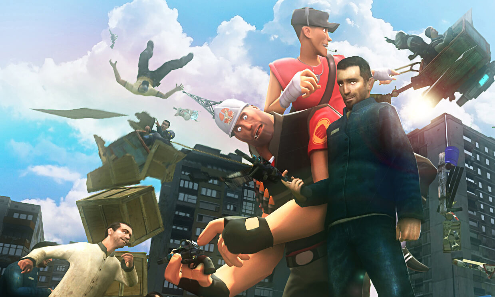

Возможности этой игры ограничиваются, разве что, вашим воображением...
Вы создаете объекты и соединяете их вместе для создания ваших собственных конструкций — машина ли это, ракета, катапульта или нечто пока без названия — это зависит от вас. Если с конструированием у вас не слишком замечательно — не расстраивайтесь! Вы можете разместить множество персонажей в глупых позах. Для функционирования Garry’s Mod (начиная с версии 10 и вплоть до 13) необходима как минимум ещё одна игра на движке Source, например Half-Life 2: Episode Two, Counter-Strike: Source. Новые объекты и персонажи доступны при покупке любой из них, так как входят в основной дистрибутив движка Source. Соответственно, другие игры позволяют использовать в Garry’s Mod своё содержимое.
Среди них:
Песочница также насчитывает множество игровых режимов, помимо самой песочницы (Sandbox) популярны и другие, такие как:
Из-за своей растущей популярности, в этой песочнице рядовые игроки стали собираться в сообщества, как в небольшие группы, кланы, так и целые многотысячные сообщества по определённой тематике.
Во время игры также немала вероятность встретить игрока даже из своего города! Кстати, в некоторых городах даже имеются городские сообщества игроков в Garry's Mod.